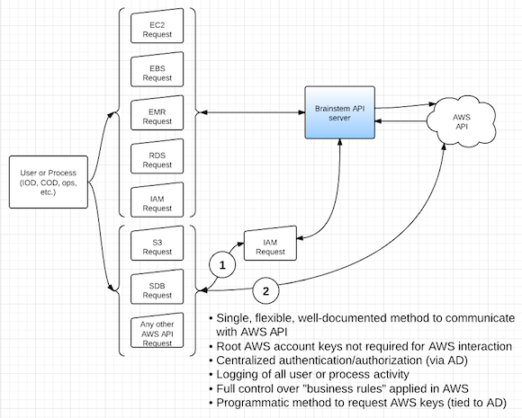
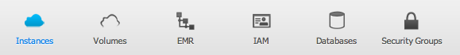
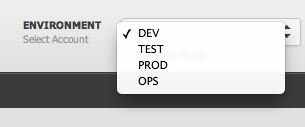
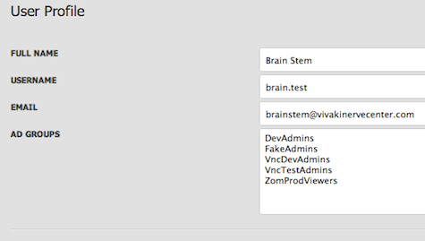
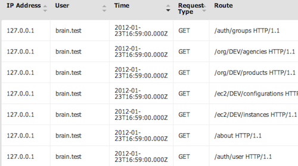
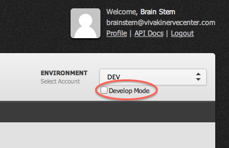

Introducing Brainstem
Brainstem is a fast, scalable, and efficient set of REST-ful web services to help make Amazon's Web Services (AWS) easier to manage. Brainstem serves as a “broker" between AWS and developers as they create, modify, and delete various pieces of AWS infrastructure, ensuring that critical business needs like security, consistent configuration, and cost control are met. Brainstem users are able to choose between making Brainstem API calls directly, or using a web GUI built on top of the API.
More specifically, Brainstem is a REST API written in Ruby and contains detailed built-in documentation that explains how to use each of the available API calls. Sample code is also included for many popular programming languages to get end users up and running as soon as possible. The VNC Seattle team uses AWS everyday, and Brainstem helps us to be more efficient.
How Brainstem Interacts With AWS
Brainstem Features and Benefits
Multiple AWS Services
 Brainstem currently supports EC2, EBS, EMR, IAM, and RDS. These are the services we use most frequently so we included them first. We are continually developing new features and adding new services to Brainstem.
Multiple AWS Accounts
 Multiple AWS accounts can be managed from a single instance of Brainstem. We have separate AWS accounts for Development, Testing/QA, and Production. Brainstem supports all of these and any number of others we might want to add in the future.
REST Easy
One of the great benefits of using a REST interface is that it can be called from any language that can make HTTP requests. To help you get started, we have provided sample code for some of the most common programming languages at VivaKi including Ruby, C#, Java, Python, Javascript, PHP, and the *nix shell (cURL).
Smart Caching
Smart caching of AWS data provides fast API response times for users of Brainstem. Typically, requesting information about AWS resources via Brainstem is faster then querying that same information directly from AWS.Temporary Resource Access
Brainstem supports granting access to specific AWS resources for a temporary amount of time. This allows admins to give temporary access to a third party without having to worry about later revoking the privileges. The temporary access can also be tailored to exactly the resources needed, and nothing more, by using a pre-defined set of access policies. This also allows developers to programatically request a set of keys instead of hardcoding them or storing them in their script or application. By requesting these temporary AWS API Keys, developers are still able to utilize all of AWS's products even if Brainstem doesn't directly support them.
Secure
All API requests and responses are required to be encrypted from end-to-end using HTTPS. Any unencrypted requests to Brainstem will be denied.Active Directory Integration
 Brainstem integrates directly with Active Directory, allowing authentication and authorization to be centrally managed. Why have another system to manage your system?
Detailed Logging
Every request made through Brainstem is logged. This allows admins to easily audit changes made to their cloud infrastructure. Retrieving the logs is as easy as making a REST API call or a few clicks in the web interface. Brainstem Web Interface
Clean, simple user interface
 The Brainstem graphical user interface (GUI) application was designed for fast and efficient access to AWS resources.
We listened to the problems users were experiencing with our legacy AWS management application and designed the new interface with this feedback in mind.
The Brainstem graphical user interface (GUI) application was designed for fast and efficient access to AWS resources.
We listened to the problems users were experiencing with our legacy AWS management application and designed the new interface with this feedback in mind.
HTML5 and JavaScript Thick Client
We wanted the Brainstem GUI to require no server-side application code. This means less time spent by Operations Engineers maintaining the application. The entire GUI application is written in JavaScript and runs on the user's web browser. All that is needed is a web server to serve the necessary HTML, CSS, and JavaScript files.
Develop Mode
 To help developers quickly learn how to contruct Brainstem API requests, we created "Develop Mode". Since the GUI runs completely from the user's browser, it effectively makes Brainstem API requests from the user's browser. The user's GUI interactions are translated and sent off as Brainstem API requests. Develop Mode displays to the user the details of each Brainstem API request before it is sent off. These details can then be used as examples by a developer as he or she writes code to interact with Brainstem.
Secure
The Brainstem GUI security model was implemented after considerable analysis on potential vulnerability points. All communication between the user's browser and the server is encrypted, and the username and password are stored securely in memory.Brainstem Development
6-Day Hackathon
Because of an extremely short timeline, we decided to try an unorthodox development strategy. This included a two week planning phase followed by a 6-day remote hack-a-thon. The goal was total seclusion and focus. No email, no IM (outside of emergencies). We were singularly focused on returning to the office with an application that fully met the aggressive list of requirements.
Development Process
We wanted to implement, in parallel, an API as well as a GUI that depended on the API. In order to get both of these done effectively and efficiently, we set the following guidelines for the 6-day offsite:- Every day will include morning demos/code reviews right after breakfast, a stand-up after lunch, and another stand-up/demo after dinner.
- Tests must be written before any functionality is considered finished
- Documentation must be written before any functionality is considered finished
- If your check-in breaks any existing tests, it's your responsibility to fix it
- Try to figure out your own problems, but speak up if you get blocked for more than 30 minutes
- Use TODO comments liberally to flag less essential things that come to mind as you're coding
- The team is committing to specific goals for the week. the team is NOT committing to working specific hours for the week.
Learnings
We learned a ton from this experience and hope it can be helpful to others:- Identify the "really important things".
These might be team goals. These might be user stories or epics. When everyone clearly understands what the "really important things" are, productivity quickly increases. - Communicate a vision and get the team inspired and motivated by that vision.
Influencing everyone on the team into believing they really are important is even better. In other words, you can't just tell them it's important, you have to convince them it's important. - Distractions kill.
Not only do distractions take time away from focusing on the really important things, but context switching takes away even more time. We're not saying people should work non-stop in a sound-proof, locked office. People need breaks, exercise, fresh air, social time, beer, etc. But when someone wants to focus, letting them focus is key. - Find the right people.
We know it's really tough to find and hire the perfect candidates, but the sheer amount of high quality work we got done in six days is a strong testament to the necessity of having the right team members. - Use tools that don't add friction.
Tools that are hard to use or understand not only cause unnecessary slowdowns, but also create feelings of frustration or anger which then kill creativity. It's amazing how little administrative tasks can derail focus and creative thought (aka "the flow"). We used trello.com to keep everyone in sync.
Contributors
- Dylan Carney: API Technical Architect and Developer
- Michael Wasser: API Developer
- Garrett Patterson: UI Developer
- Carl Krauss: UI Developer
- Stephen Renault: API Tester
- Chris Castle: Product Owner/API Dev/UI Dev